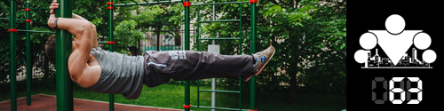
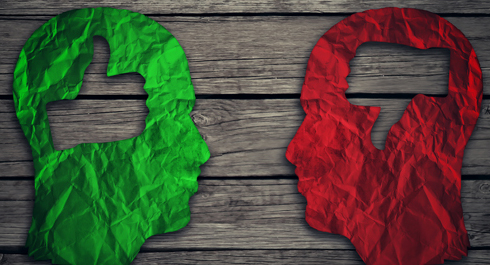

Today's post is about competitions and our attitude toward them. It is not only about sport competitions, but more about competition in general and motivation that we draw from competition and rivalry.
First of all, we would like to point out that there is a clear distinction between competitive motivation and inner motivation and competitive goals are different from inner goals. We are not talking about the abstract goals of being faster, higher, stronger since these principles can also be ipplied internally to ourselves. We are talking about real competition where there is always a winner and a loser.
With correct approach such competitions can motivate much more than gradual progress. Competitions take revolutional approach against evolutional one of your regular trainings. If you ever took part in a competition, you know what we mean. Adrenaline, excitement, striving to show your best to beat your rivals make you to demonstrate your true maximum potential, even exceed it. While regularly I was able to do 20-25 pull-ups, during competitions I could manage to do 30. A desire to win is one of the most potent stimuli.

But every medal has its back side, therefore talking about this desire to win a competition we should not forget about negative effects it might bring. Having strong reasons to progress is great, but winning should not be on the top of it. Unlike proffessional athletes, workouters are eager about health, then beauty, strength, self-development and so on. Actually I'm not talking only about WorkOut right now, since this applies to every sport you take part in and compete. Your health is most important and you need to prioritise it over other goals even if it hurts your pride. Do not compete if you do feel well or have an injury, it is not worth it. Time will come and eventually you will reach your goal. First of all, you need to compete with yourself and work on it every day.
We are not telling you that you should not compete with others and try to be the first but this goal does not have to turn into an obsession. Use competitions wisely, to motivate yourself further but do not forget about the major goal.
Personally, we like the excitement of spirit of competitions although for us the most exciting thing is not the number of pull-ups reached but the number of people we were able to bring into workout, the number of people completed another edition of 100 Days programme, how many people have learned about workout. We know how workout can change lives and for us it is the best reason to go on and we hope that we are not alone.
In this post we have discussed formal competitions but the idea fits well in friendly contests while training with friends, like “who does most pull-ups”. Excitement is one the reason why training with a team or a partner is more effective than training alone. It does not let you to slack off for a bit.